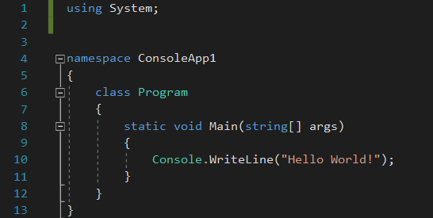
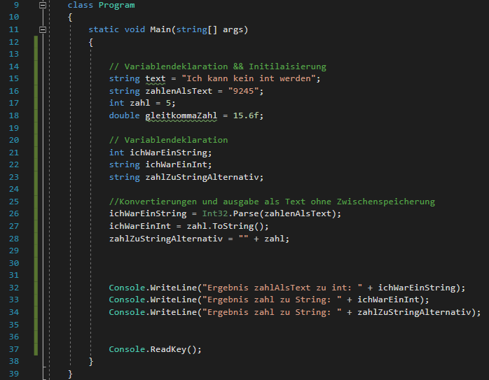
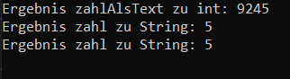
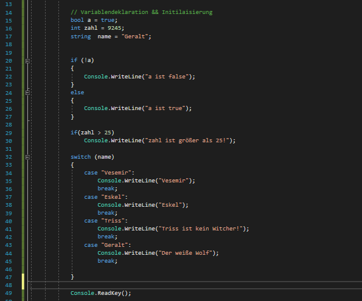
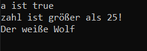

01 Sprachgrundlagen
C#, auch C#.NET (Visual Studio) ist eine Weiterentwicklung der Programmiersprache C++, letztere wird u.a. in Game Engines, wie der Unreal Engine verwendet. Bei C# handelt es sich um eine objektorientierte Programmiersprache.
Die Raute, die dem C folgt symbolisiert vier, sich überlappende, Plus-Zeichen (C++++). Die Programmiersprache wurde von Microsoft entwickelt und erschien erstmals mit Visual Studio .NET 2002.
Für Nutzer der Windows Plattform stellt(e) sie eine alternative zu Java dar.
C# ist: Imperativ, Objektorientiert, stark typisiert - im Gegensatz zu JavaScript, das Anstelle von differenzierten Typen “var” verwendet.
02 Das OOP-Programmierparadigma
Paradigma == Grundprinzip || Denkweise.
In der OOP wird der Code in Daten und Objekte gekapselt. Jedes Objekt repräsentiert tatsächlich eine Art “Objekt”. Im Bezug auf die OOP kann alles als ein Objekt angesehen werden: Tiere sind Objekte, Tische sind Objekte und so weiter. Will man z.B. für ein Spiel einen Menschen erzeugen, so macht es Sinn, ein Mensch-Objekt anzulegen, dass die Informationen und Funktionen eines standard Menschen beinhaltet.
03 Grundidee und Entstehung
Zitat
C# (lies C-Sharp) ist eine von Microsoft entwickelte Programmiersprache, die bei ECMA International[1] und der International Organization for Standards[2] als Standard registriert ist. Sie wird im Rahmen des Softwarepraktikums in Kombination mit dem XNA-Framework als Sprache zur Softwareentwicklung eingesetzt.
Während der Entwicklung von Microsofts .NET-Frameworks wurden die Klassenbibliotheken ursprünglich in einem Compilersystem namens Simple Managed C (SMC) geschrieben. 1999 wurde eine neue Sprache, Cool (C-Like Object Oriented Language), entwickelt. Aus lizenz- und urheberrechtlichen Überlegungen entschied sich Microsoft jedoch gegen den Namen Cool. Als im Jahr 2000 das .NET-Framework zum ersten Mal öffentlich vorgestellt wurde, ist die Sprache in C# umbenannt worden. Im gleichen Zuge wurden die Klassenbibliotheken und ASP.NET nach C# portiert.
Die Designprinzipien anderer Programmiersprachen wie C++, Java, Delphi und Smalltalk schufen die Grundlagen für die Common Language Runtime (CLR), die das Design von C# selbst angetrieben hat.
04 Syntax

Linie 1: “using System;” gewährt Zugriff auf Klassen aus dem Namespace “System”.
Linie 4: “namespace” beinhaltet Klassen und andere Namespaces. Er wird zum organisieren des Codes verwendet. Wie auch mit “using System” können andere Klassen “using ConsoleApp1” verwenden, um Zugriff auf die Klassen des Namespace zu erhalten.
Linie 6: “class” beinhaltet Methoden und Daten. C#-Code kann nur innerhalb von Klassen ausgeführt werden
Linie 8: Der Code innerhalb der Main Methode wird ausgeführt.
Linie 10: “Console” ist eine Klasse aus dem Namespace “System”.
Ohne den Code in Linie 1 könnten wir diese Klasse nicht verwenden und würden einen Compiler-Error erhalten.
“WriteLine” ist eine (vordefinierte) Methode, der Klasse Console innerhalb des namespace System. Durch Punktnotation (der Punkt zwischen Console und WriteLine) können wir diese Funktion ausführen. Die Methode selbst gibt Text aus, in diesem Fall “Hello World”.
Sollte man aus irgendeinem Grund darauf verzichtet haben den Code in Linie 1 zu tippen, kann man via Punktnotation auch auf die Methode zugreifen. Es verläuft in diesem Fall nach dem folgenden Muster:
Namespace.Klasse.Methode, auf dieses Beispiel angewandt sähe der aufruf wie folgt aus: System.Console.WriteLine();
05 Bezeichner und Schlüsselwörter
Bezeichner: Selbstvergebene Variablennamen, Funtkionsnamen etc. ein Beispiel: float zahlA;
“zahlA” ist hier der Bezeichner.
Schlüsselwörter sind vordefinierte und reservierte Identifikatoren, die eine besondere Bedeutung für den Compiler besitzen. Hier eine Beispiele für reservierte Schlüsselwörtern (eine vollständige Liste kann unter “Quellen und weiterführende Links” gefunden werden):
| class | int | double |
| null | switch | return |
| new | sealed | void |
Es exisitieren weitere Schlüsselwörter, die kontextabhängig sind. Diese Schlüsselwörter haben besondere Bedeutung im Code und es handelt sich nicht um reservierte Bezeichner. Hier eine kleine Beispielliste (eine vollständige Liste kann unter “Quellen und weiterführende Links” gefunden werden):
| add | async | await |
| yield | from | where |
| equals | nameof | partial (method) |
06 Einfache Datentypen,Konstanten und Literale
Einfache Datentypen sind Typen wie int, double, string, char etc.
Konstanten sind Variablen, die sofort initiliaisiert werden müssen und danach nicht mehr abgeändert werden dürfen.
Literale (Ganzzahl, Gleitkomma, logische Literale, Zeichenketten), die direkt in das Source-File geschrieben und können somit auch nicht abgeändert werden, ein Beispiel:
const string bsp = ‘Lit1232’;
“bsp” stellt hier die Konstante dar, wie unschwer durch die Voranstellung von “const” zu erkennen ist.
“Lit1232” ist hierbei das Literal.
07 Variablen & Werte-Zuweisungen
Variable: Ist ein (zusätzlicher) Name, der eine Speicheradresse symbolisiert.
string a; Durch den Typ string bedeutet, dass a nur eine Zeichenfolge zugewiesen werden kann. Auch Zahlen werden hier nur als Zeichen, also als Text interpretiert.
int b; Der Typ int steht für ganze Zahlen ohne Gleitkomma, d.h. einer Variable vom Typ int können alle ganzen Zahlen zwischen -2.147.483.648 und 2,147,483,647 zugewiesen werden (32-bit).
Zusammengefasst bedeutet dies, dass a = “ich bin ein string” nicht zugewiesen werden könnte, da a eine ganze Zahl erwartet (der compiler wird in diesem Fall einen Fehler werfen). Ebenso wenig kann man b = 1232 setzen, da 1232 keine Zeichenfolge ist.
Es gibt Möglichkeiten die Datentypen zu konvertieren, doch dazu mehr im nächsten Unterpunkt.
08 Typkompatibilität & Typkonversion
Es ist möglich verschiedene Typen zu konvertieren. Hier einige Beispiele zur Typkonvertierung (eine komplete Liste kann in den Links am Ende der Seite gefunden werden):
 
09 Operatoren
Operatoren sind in C# Symbole, die verwendet werden um bestimmte Aktionen durchzuführen. Einige der gängigsten Operatoren sind die Folgenden:
| Symbol | Name |
|---|---|
| == | Gleichheit |
| != | Ungleich |
| > | Größer |
| >= | Größer gleich |
| < | Kleiner |
| <= | Kleiner gleich |
| && | Und |
| || | Oder |
| + | Addition |
| - | Subtraktion |
| / | Division |
| * | Multiplikation |
| % | Rest (Division) |
| = | Zuweisung |
Es exisitieren auch kombinierte Zuweisungen wie z.B.:
c += d; ausgeschrieben: c = c + d;
10 Kontrollstrukturen
Erlauben das Überprüfen und Reagieren auf Werte.
Bewerkstelligt wird dies durch Schleifen, if und if-else Konditionen, sowie Switch-Anweisungen.
If-Konditionen sind keine Schleifen!


Quellen und weiterführende Links
01 http://www.dotnet-lexikon.de/CSharp/lex/294.aspx
https://docs.microsoft.com/de-de/dotnet/csharp/whats-new/csharp-version-history
https://docs.microsoft.com/de-de/dotnet/csharp/programming-guide/types/
https://www.dev-insider.de/was-ist-ein-programmierparadigma-a-864056/
02 https://www.dev-insider.de/was-ist-oop-a-677737/
https://programmieren-starten.de/blog-objektorientierte-programmierung/
03 https://sopra.informatik.uni-freiburg.de/soprawiki/CSharp/Geschichte
https://docs.microsoft.com/de-de/dotnet/csharp/whats-new/csharp-version-history
04 https://www.w3schools.com/cs/cs_syntax.asp
05 https://docs.microsoft.com/en-gb/dotnet/csharp/language-reference/keywords/
06 https://docs.microsoft.com/de-de/dotnet/csharp/tour-of-csharp/types-and-variables
07 https://docs.microsoft.com/de-de/dotnet/csharp/tour-of-csharp/types-and-variables
08 https://docs.microsoft.com/de-de/dotnet/standard/base-types/type-conversion
https://docs.microsoft.com/de-de/dotnet/standard/base-types/conversion-tables
09 https://docs.microsoft.com/de-de/dotnet/csharp/language-reference/operators/
https://de.wikibooks.org/wiki/C-Programmierung:_Ausdr%C3%BCcke_und_Operatoren#Gleichheit_==
10 https://codestarter.ch/c/kontrolltrukturen